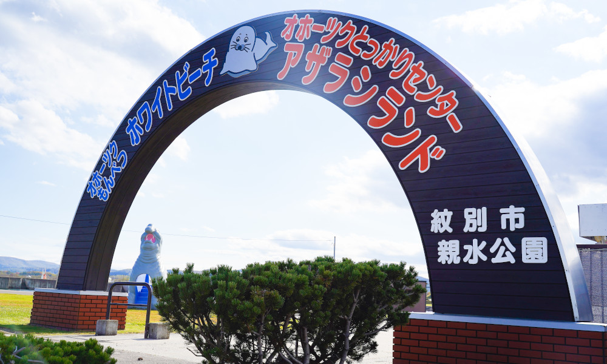
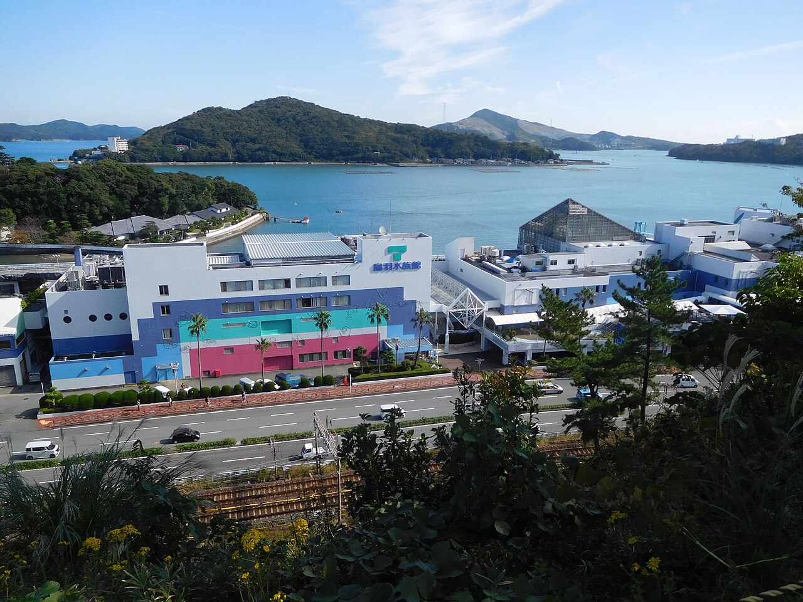

Protecting Seals and Discovering Marine Life
Aquariums and marine animal rescue centers provide opportunities to learn about seals, observe their behavior, and better understand the environments in which they live. While aquariums care for a wide variety of aquatic animals, specialized rescue facilities focus on helping animals that have been injured, stranded, or separated from their natural habitats.
For seals, these facilities can play an important role in animal care, rehabilitation, public education, and conservation. Some rescued seals recover sufficiently to return to the wild, while others remain in human care when they cannot survive independently.
Two Japanese facilities offer interesting examples of how people interact with and care for marine mammals: the Okhotsk Tokkari Center in Hokkaido and Toba Aquarium in Mie Prefecture.
Okhotsk Tokkari Center: A Home for Rescued Seals
The Okhotsk Tokkari Center, also known as Seal Land, is a seal rescue and sanctuary facility located in Mombetsu, Hokkaido, Japan.

Established in 1987. They are open to the public and have opening hours of The center first began when four seals were taken in for protection. It has since grown into a facility caring for more than 20 seals.The center focuses exclusively on seals, particularly species native to the Sea of Okhotsk and surrounding northern waters. Its residents primarily consist of spotted seals and ringed seals, two species adapted to cold environments, However they do host other species of seals as well such as the Grey Seal.One of the center's most important roles is rescuing wild seals that need assistance. Seals may be found stranded on beaches, inside harbors, or in other locations where they are injured, weakened, or otherwise unable to survive without help. When a seal is rescued, its condition must be assessed so that it can receive appropriate care. Depending on the animal's needs, this may involve food, medical treatment, monitoring, and time to recover. Not every seal can return to the wild. Some animals have lasting injuries or other conditions that make independent survival difficult. These seals may remain at the center, where staff can provide ongoing care.
Toba Aquarium: Exploring the Underwater World
Toba Aquarium is located in Toba, Mie Prefecture, Japan

. It opened in May 1955 and has grown into a large aquarium featuring animals from a wide range of aquatic environments.The aquarium is divided into 12 main zones, allowing visitors to explore different habitats and groups of animals. Its exhibits include marine mammals, freshwater species, and animals from tropical, temperate, and polar environments. Toba Aquarium is not exclusively a seal rescue center like the Okhotsk Tokkari Center. Instead, it provides a broader look at aquatic life, including the diversity of marine mammals and the different environments in which they live.Toba Aquarium's exhibits include seals and other marine mammals. Its Sea of Polar Regions zone features animals associated with colder environments, including Baikal seals. The Baikal seal is particularly interesting because it lives exclusively in Lake Baikal in Siberia, Russia. Unlike most seals, which inhabit marine waters, Baikal seals are freshwater animals. Their presence at an aquarium allows visitors to learn about a seal that has adapted to a very different environment from the ocean dwelling spotted and ringed seals.
Toba Aquarium also participates in research, animal care, and the protection and breeding of rare aquatic animals. Its work includes efforts involving species of conservation concern.